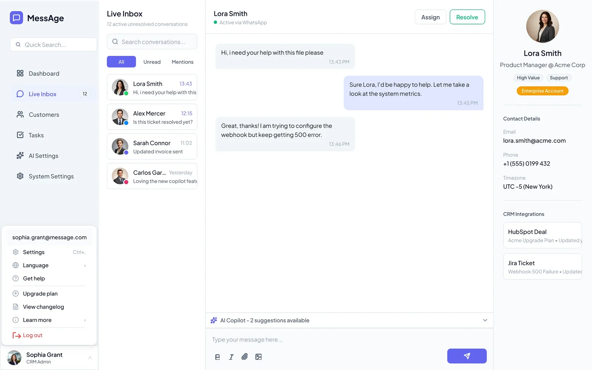
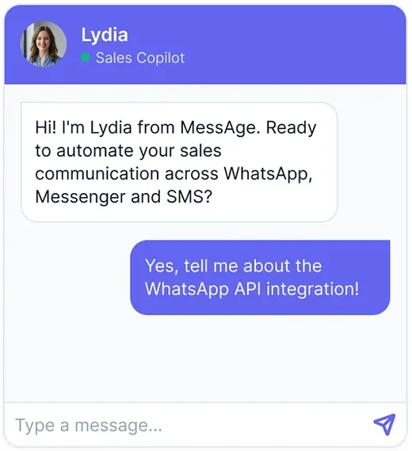
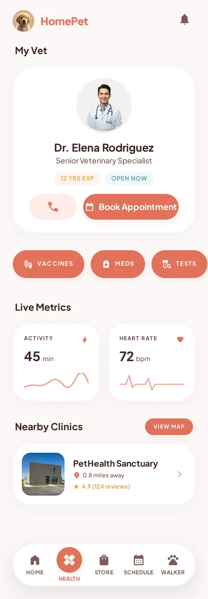
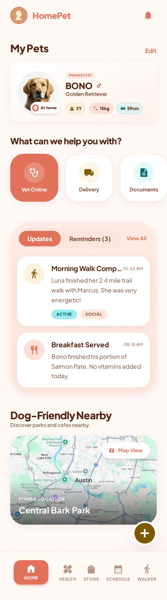
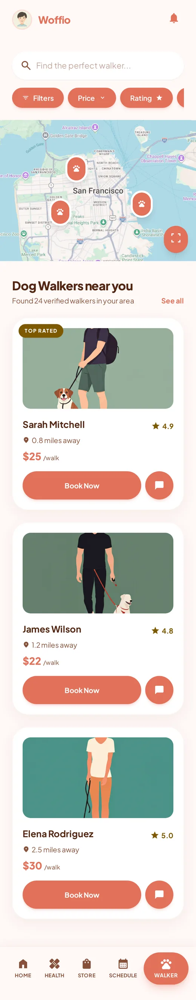
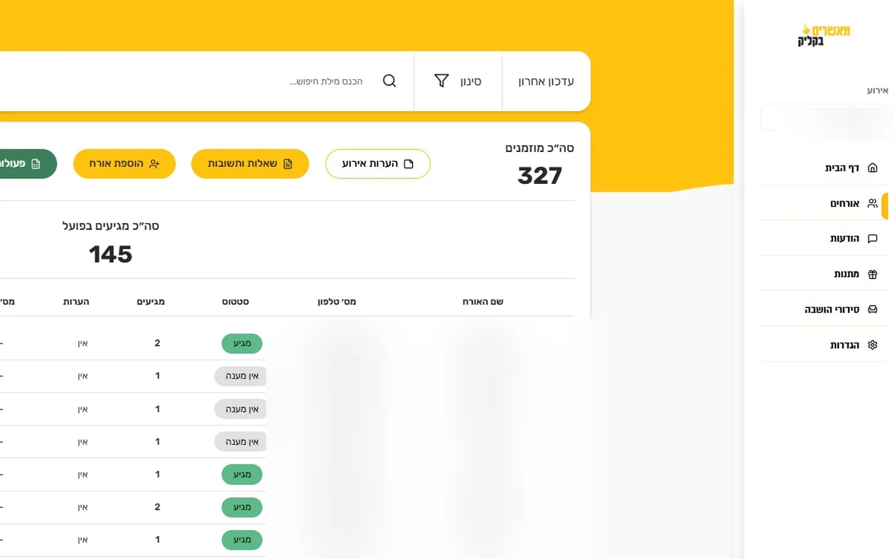
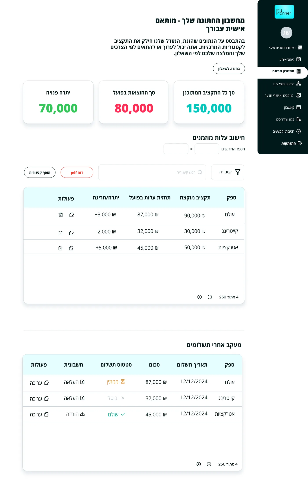

Selected work
Work,end to end.
Each project started as a real problem and a blank canvas, and I owned the whole arc: research, strategy, UX/UI and the build. Two are real products I built and run, one of them live in the App Store with paying customers. Two are end-to-end concepts.
MessAge
AI messaging that answers leads across WhatsApp, Instagram and email
For solo professionals who lose work because they can't reply while they're working.


Woofio
One dog-care app, from vet tracking to dog-walker booking
Replaces the handful of apps dog owners juggle today with one platform families can trust.



Meashrim in Click
RSVP, seating and gifting for couples, in one iOS app
I characterized, designed, built and launched it on my own. Couples pay a subscription to run their event with it.


MyPlanner
AI wedding planning: budget, suppliers and cashback in one place
A working system in real use that replaces a human planner who costs couples ₪8,000 or more.

Contact
Get in
touch.
Open to product design roles. If you have a product to take from 0 to 100, I'd like to hear about it.